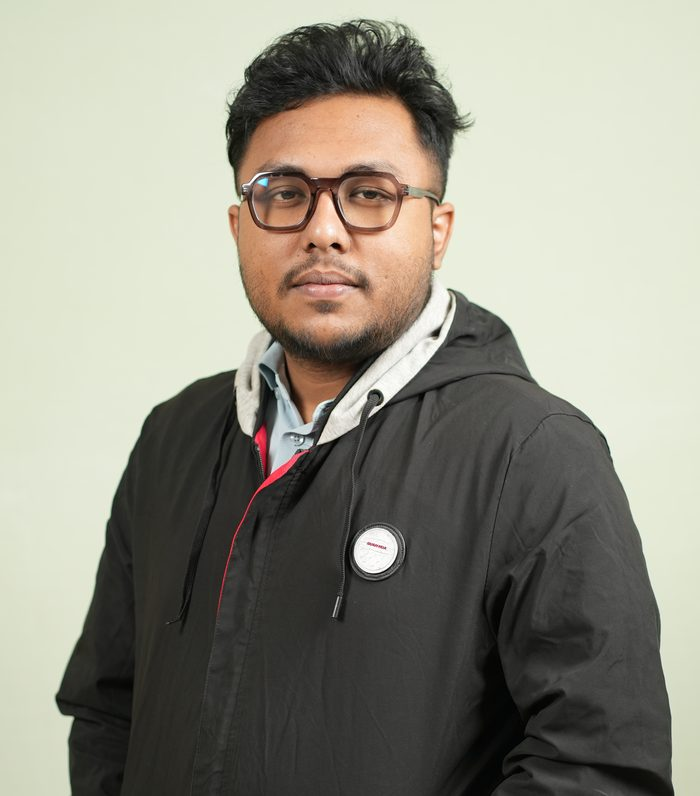

Building .NET microservices and airline system integrations at Akij iBOS, and publishing deep-learning research — four peer-reviewed papers across MDPI, Springer, and IEEE.

Backend engineer at Akij iBOS, working on .NET microservices and airline system integration for Travilo — a multi-tenant SaaS flight-booking platform. Focused on the supplier side, connecting airline and GDS systems such as Amadeus, Sabre, AirArabia, AirBlue, Tripjack, and Travelport over REST, gRPC, and SOAP.
Alongside engineering, an active machine-learning researcher — four peer-reviewed papers in deep learning and computer vision, and a BSc thesis on hybrid deep learning for pedestrian trajectory imputation. Formerly a computer science lecturer at United International University.
Multi-tenant SaaS flight-booking platform. Airline & GDS supplier integrations behind a unified search, booking, ticketing, and refund API on a .NET microservices backend.
Computer-vision models for retail theft detection — the R&D work that started my engineering role.
Orchestrating airline and GDS flight APIs through WSO2 — normalising inconsistent supplier protocols into a single interface.
Deep-learning models for reconstructing missing pedestrian trajectories — the codebase behind my journal and conference papers.
Open to backend engineering roles, research collaborations, and PhD / lecturer opportunities in machine learning and computer vision.